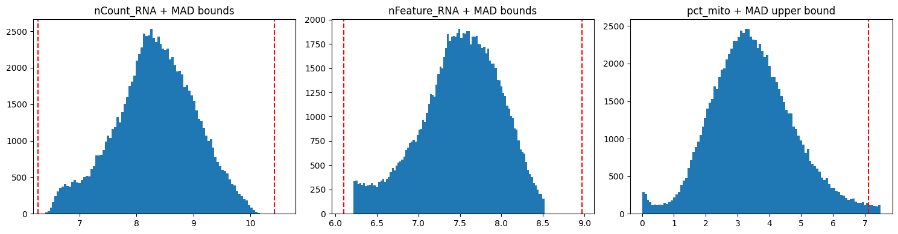
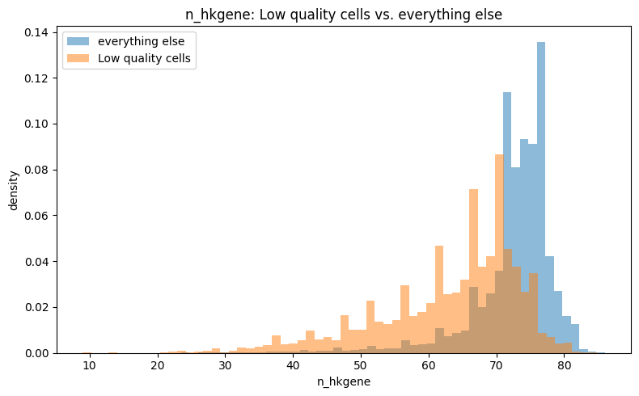
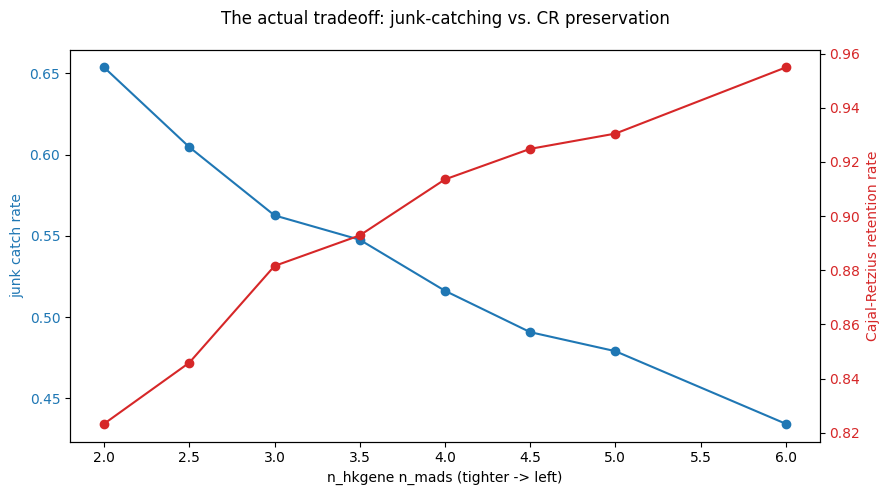
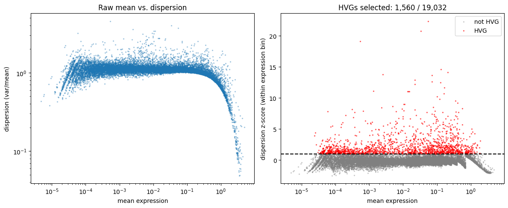
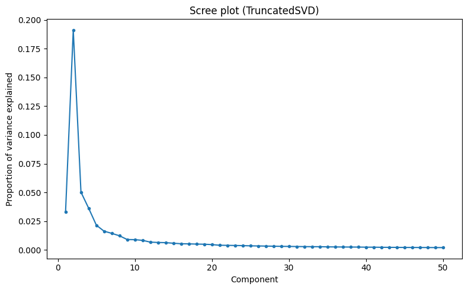
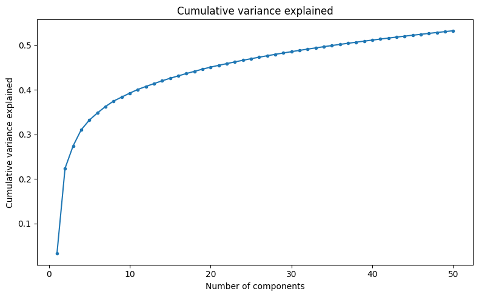
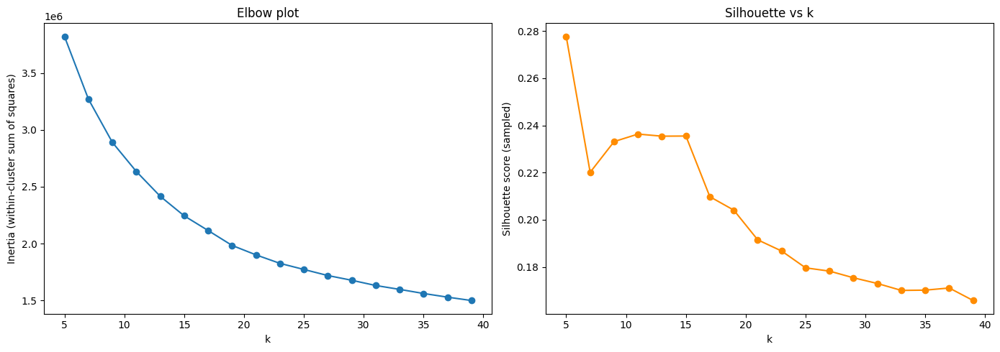
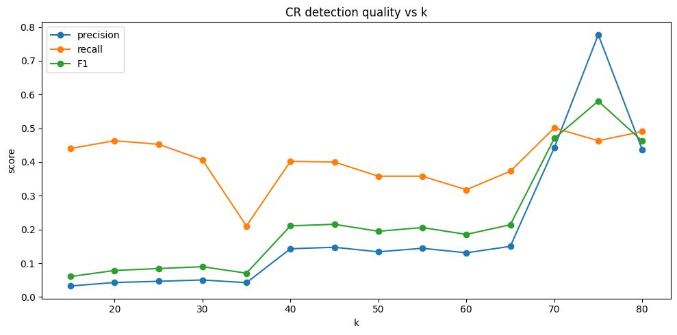
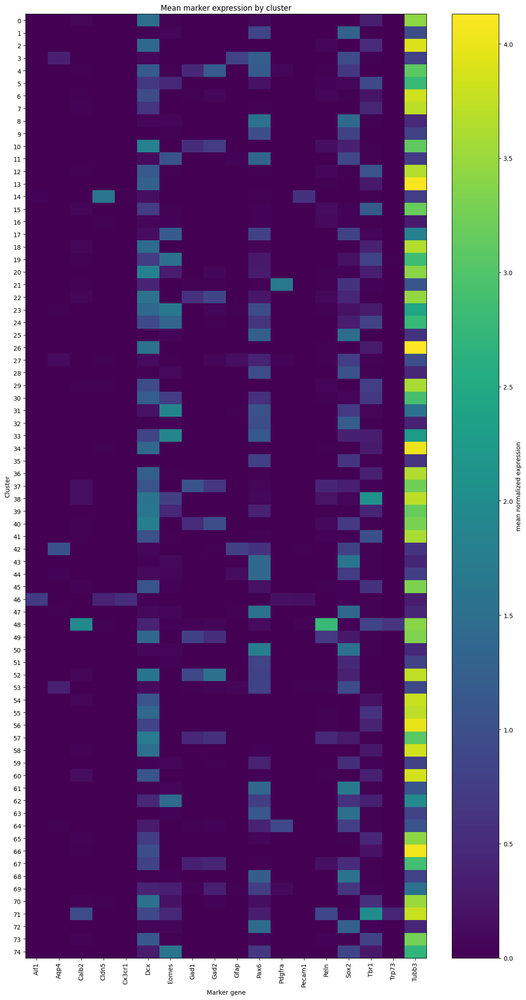
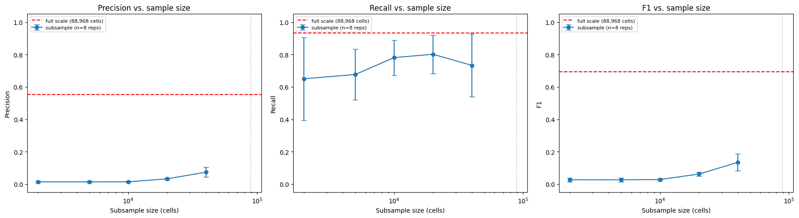

This pipeline was built from scratch and checked against real ground truth at every step. Can it correctly find a rare cell population using only marker genes and unsupervised clustering? And does that hold at the sample sizes most single-cell studies actually use, or only at this dataset's unusually large scale?
Why this matters, in plain terms: judge this pipeline by recall alone and it looks solid at almost any scale — 65–80% even on small subsamples. But precision at those same sizes drops to about 1%. The candidate cluster is mostly noise, not signal. Finding that took rebuilding the whole pipeline forty separate times across five sample sizes, not trusting a single run. That's the point of this project: a result that survives repeated testing, not one that looks good once.
First: a pipeline built entirely from scratch — QC, normalization, feature selection, dimensionality reduction, clustering, marker-based annotation — has to correctly recover a specific, known rare cell population, checked against a published dataset's own ground-truth labels rather than a plausible-looking result. Second, and more interesting: does that reliability hold at realistic single-cell study sizes, a few thousand to tens of thousands of cells? Or only at this dataset's unusually large full scale of roughly 89,000?
Single-cell RNA sequencing of the developing mouse cerebral cortex, spanning 13 developmental timepoints from E10 through P4. 98,047 cells by 19,712 genes at load. I chose this dataset because its published cell-type annotations, including Cajal-Retzius cells, give real ground truth to validate against instead of a plausible-looking cluster. Cajal-Retzius cells are a rare population with an early, well-documented role in cortical layering.
Architecture: ingestion, QC aggregation, and highly-variable-gene selection run in Spark across the full dataset, since that's the genuinely heavy, distributed-appropriate work. Once the feature-reduced data fits comfortably in memory (88,968 cells × 1,560 features after HVG selection, about 91.5% sparse), PCA and clustering move to scikit-learn running locally. Spark ML's model-size guardrails made distributed PCA and clustering counterproductive at this scale, so there was no reason to keep fighting that once the data no longer needed it.
The deposited matrix turned out to be already log-normalized,
not raw counts. Computed per-cell totals matched the
metadata's published nCount_RNA in their zero-pattern,
but not in magnitude (correlation only 0.797, non-integer values) —
the signature of a log1p transform already applied. Re-normalizing
on top of that would have silently double-transformed the data. No
error message, just wrong numbers downstream, so this had to be
caught by checking the data rather than trusting it.
Standard MAD-based thresholds (n_mads=5.0, within the
typical 3–5 literature range) were cross-checked against the original
authors' own "Low quality cells" and "Doublet" labels, as a direct
test of whether the threshold caught anything real. It caught
zero of 6,399 flagged cells, so it was tightened to
n_mads=3.0.

A second diagnosis mattered more than the threshold change: "Low quality" and "Doublet" are different failure modes. Doublets, two cells captured as one, often look perfectly healthy by depth metrics, since what defines a doublet is a mixed transcriptional signature, not shallow sequencing. So instead of tightening a depth threshold further, the fix was to switch to the dataset's own Scrublet doublet score directly.
A third QC dimension, housekeeping genes detected per cell
(n_hkgene), was added only after testing whether it
separated flagged cells from the rest.

Once confirmed useful, it was swept across a range of thresholds (2.0–6.0 MADs) to find the point that traded off junk-catch rate against Cajal-Retzius retention, rather than picking a threshold and hoping it worked. 3.5 MADs was the landing point: 54.8% combined catch rate on flagged cells, and 89.3% CR-cell retention (57 of 532 CR cells lost in exchange for that filtering).

| Filter stage | Cells retained | % of total |
|---|---|---|
| Raw, loaded | 98,047 | 100.0% |
| Final QC (MAD + Scrublet + n_hkgene) | 88,968 | 90.7% |
Highly variable genes were selected with a binned dispersion z-score, the standard Seurat/scanpy method, rather than an arbitrary top-N cutoff. Genes are binned by mean expression first, because raw dispersion is confounded with expression level: highly-expressed genes are almost always more variable in absolute terms, which isn't the same as being informative. A gene only counts as an HVG if its dispersion is an outlier relative to other genes at a similar expression level. 1,560 genes were selected at a z-score cutoff of 1.0.

PCA ran via TruncatedSVD instead of textbook
mean-centered PCA, chosen specifically because the data is sparse.
Mean-centering would subtract a non-zero mean from every gene,
turning every implicit zero into a small non-zero value and
destroying the matrix's sparsity. This is standard practice for
sparse single-cell data — scanpy defaults to a similar approach for
the same reason.
One subtlety here: uncentered SVD can produce a first component dominated by overall expression magnitude rather than biological variation, since nearly every cell projects similarly onto that direction. That gives it a large singular value but little actual information. This was checked directly by comparing PC1's explained variance against PC2's — for correctly ordered singular values, PC1 should never explain less. 20 principal components were carried forward to clustering, explaining 42.2% of variance.


A standard inertia/silhouette sweep favored k≈11–15, the best overall clustering structure across roughly 25 published cell types at once. But resolving a population that makes up only about 0.5% of the dataset needs much finer resolution than whatever's optimal for the dataset as a whole. At low k, a rare population simply gets absorbed into whichever larger, coarser cluster it resembles most.

A systematic search measured this directly. For each k from 15 to 80: cluster, score every cluster by mean expression of four Cajal-Retzius markers (Reln, Trp73, Calb2, Tbr1), and record precision/recall/F1 for the top-scoring cluster against the published labels. F1 stayed weak (0.06–0.09) from k=15 through k=35, jumped at k=40, and peaked at k=75 (single cluster: 77.7% precision, 46.3% recall, F1=0.580). That's an evidence-based optimum for this specific question, different from whatever counts as the "best" k for the dataset overall.


46.3% recall at k=75 didn't get treated as a ceiling. Checking whether the missed CR cells were scattered randomly or concentrated in a second, nearby CR-enriched cluster found the latter. Combining the top-2 CR-scoring clusters recovered substantially more recall: precision 55.2%, recall 93.3%, F1=0.694 at full scale, from two related subclusters instead of one. This trade-off is worth being explicit about: for rare-cell discovery, missing real CR cells is generally worse than tolerating some false positives in an exploratory cluster. That's why the combined-cluster answer is the one carried forward, not the higher-precision single cluster.
This dataset happens to be unusually large for a single study, which raises the actual question this project is built around. Does detecting a population this rare stay reliable at the sample sizes most single-cell studies actually work with, a few thousand to tens of thousands of cells? Or does it only work this well because of scale most studies don't have?
Method: draw 8 independent random subsamples at each of five sizes,
and re-run the exact same validated detection method on
each — cluster, score by CR markers, take the top-2 scoring
clusters. Using a simplified or different method here would
confound "does scale matter" with "did the method change," so
nothing changes except the sample size. k scales
proportionally with subsample size, using the same cells-per-cluster
ratio as the full-scale k=75.
| Sample size | k | Precision | Recall |
|---|---|---|---|
| 2,000 | 8 | 1.4% | 65.0% |
| 5,000 | 8 | 1.4% | 67.6% |
| 10,000 | 8 | 1.4% | 78.1% |
| 20,000 | 17 | 3.2% | 80.1% |
| 40,000 | 34 | 7.4% | 73.3% |
| 88,968 (full) | 75 | 55.2% | 93.3% |

Recall stays high at small sample sizes while precision collapses. At 2,000–10,000 cells, recall holds at 65–78%, so the method looks like it's successfully finding Cajal-Retzius cells. But precision at those same sizes is only 1.4%. The "candidate" cluster is a broad, heterogeneous grab-bag that happens to contain most of the true CR cells, buried among far more false positives. Judging detection quality by recall alone, a common shortcut, would suggest the method works fine at small scale. It doesn't, and this is the finding that matters most for anyone running rare-cell studies at typical sample sizes.